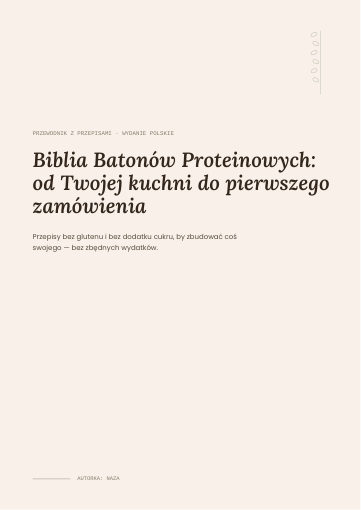
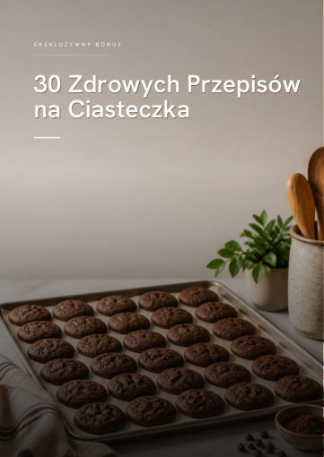
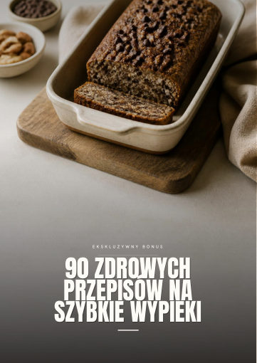
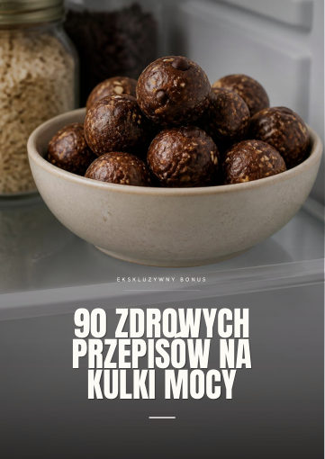
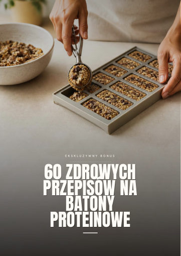
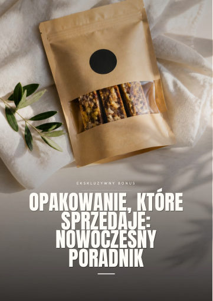

E-book główny
Biblia Batonów Proteinowych
8 sprawdzonych przepisów bez piekarnika, technika, która nie pozwala batonom się rozpadać, tanie i ładne pakowanie oraz dwutygodniowy plan pierwszej sprzedaży.
Pobierz PDF (56 str.)Twoje bonusy

Bonus #130 Zdrowych Przepisów na Ciasteczka
Ciasteczka bez rafinowanego cukru, które łatwo dodasz do swojej oferty.
Pobierz PDF (33 str.) ↓
Bonus #290 Zdrowych Przepisów na Szybkie Wypieki
Chlebki i ciasta z keksówki, które świetnie sprzedają się na kawałki i na prezent.
Pobierz PDF (59 str.) ↓
Bonus #390 Zdrowych Przepisów na Kulki Mocy
Najszybszy produkt do oferty: bez pieczenia, z miski i lodówki.
Pobierz PDF (59 str.) ↓
Bonus #460 Zdrowych Przepisów na Batony Proteinowe
60 nowych smaków na tej samej technice — stali klienci zawsze dostaną „coś nowego”.
Pobierz PDF (50 str.) ↓
Bonus #5Opakowanie, Które Sprzedaje: Nowoczesny Poradnik
Torebki kraft, naklejki, etykiety z alergenami i proste zdjęcia produktu.
Pobierz PDF (34 str.) ↓Od czego zacząć
- Przeczytaj rozdziały 2 i 3 e-booka głównego: technika batonów bez pieczenia to podstawa wszystkiego.
- Zrób pierwszą partię jednego z 4 podstawowych przepisów i daj ją do spróbowania bliskim.
- Gdy batony wychodzą Ci powtarzalnie, sięgnij po bonusy i rozszerz ofertę.
Materiały do użytku osobistego. Nie udostępniaj tego linku.